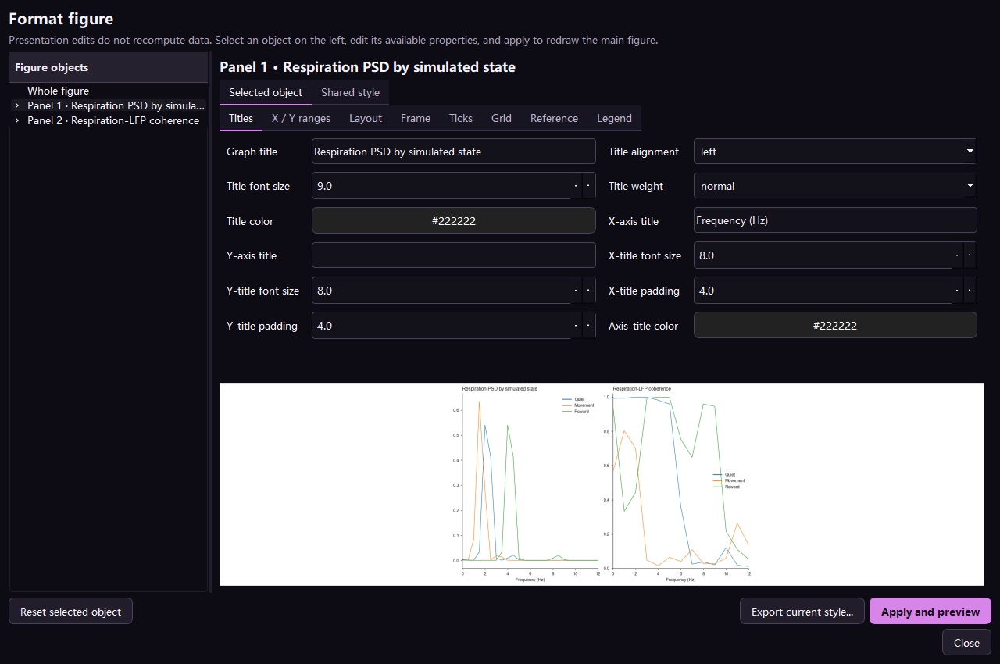

查看数值
单击线、点、柱、热图或波形，显示坐标和对应标签。
NeuroEphys AI 操作手册
逐个编辑图元和坐标轴，但不改变底层分析。论文样式、绘图数据、统计和来源始终保持关联。
单击线、点、柱、热图或波形，显示坐标和对应标签。
使用 Matplotlib 工具栏局部观察；Home 恢复原始范围。
双击坐标轴，修改标题、标签、范围、网格、刻度、边框显示、粗细和长度。
修改线宽/线型/颜色、点形/大小/填充、柱填充/边缘、热图色表/范围和文字。
设置精确宽高、页边距、panel 间距、图例位置、背景、字体和字号。
选择 panel，直接保存 SVG、PDF 或 PNG，不使用截图裁剪。
